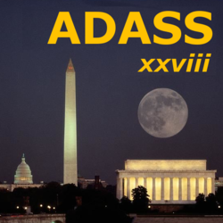

Astronomical Data Analysis Software & Systems
The Astronomical Data Analysis Software and Systems (ADASS) conference is held each year at a different hosting astronomical institution. The conference provides a forum for scientists and programmers concerned with algorithms, software and software systems employed in the acquisition, reduction, analysis, and dissemination of astronomical data. An important element of the program is to foster communication between developers and users with a range of expertise in the production and use of software and systems. The program consists of invited talks, contributed oral and display papers, tutorials, user group meetings and special interest group meetings (called BOFs).
 ADASS XXVIII
ADASS XXVIII

The 28th annual ADASS conference will be held from November 11th to 15th, 2018 at the The Hotel at the University of Marlyand, University of Maryland, College Park Campus, USA.
- Web site: http://adass2018.astro.umd.edu
- E-mail (General Inquiries):info@adass.cl
- E-mail (Local Organizing Committee): loc@adass.cl
The International Virtual Observatory Alliance (IVOA) meeting will be held immediately before ADASS, on 8-11 November, at the same venue.